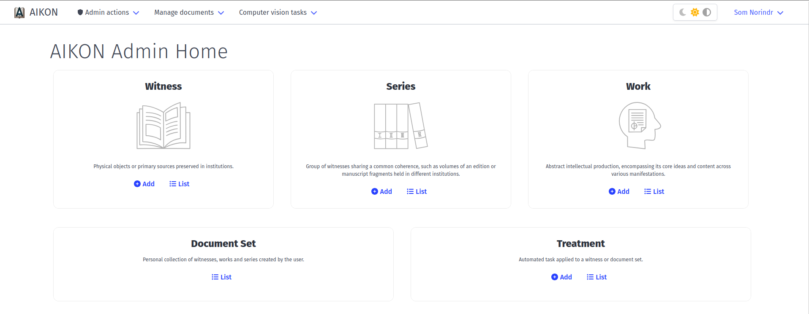
 AIKON User's Guide
AIKON User's Guide
Forms
Witness
Users can add a witness either from the homepage or the witness list interface. In the witness form, users can add metadata to identify the witness and describe its content.
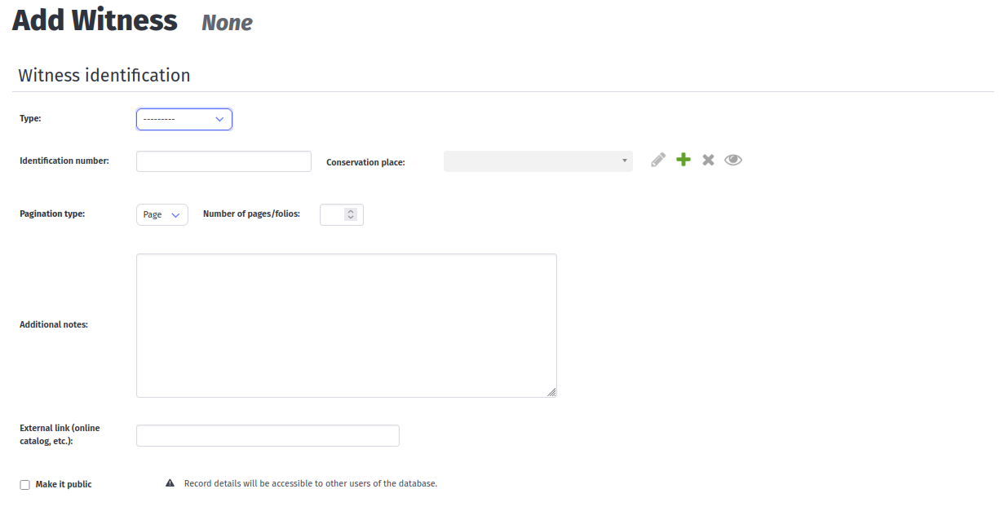
-
Type nature of the document (manuscript, letterpress print, woodblock print)
Identification number identification number from the home institution.
Conservation place heritage institution preserving the document.- You can also add a new conservation place by clicking on the + sign to input its name, city and the license of their documents.
-
Pagination type and Number of pages/folios number of pages/folios of your witness.
Additional notes free text for information with no dedicated field (e.g. previous owner, bibliographical information, etc.)
External link link to the digitalization of the witness, its bibliographical notice or a catalog page
Make it public if you check the box, your witness and its information will be made public to the other users.
Digitization
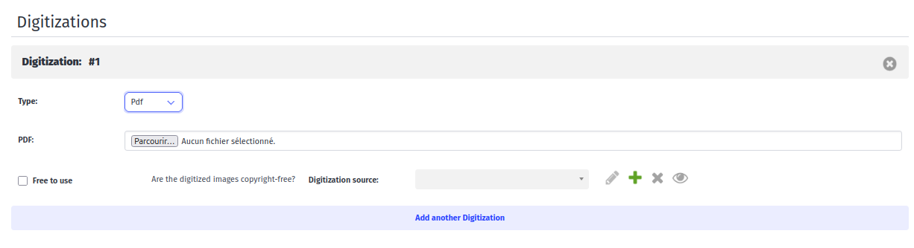
-
Type nature of the digitization (Image files, PDF or IIIF manifest).
Images digitization file or IIIF link.
Free to use if the digitization is not restricted by copyright, check the box.
Digitization source institution managing the digitization.- Multiple digitizations can be added for one witness.
Contents
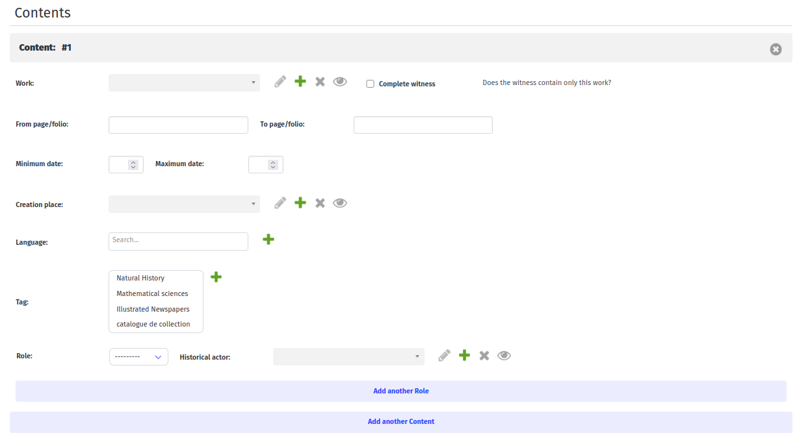
-
Work work entity. If absent from the list, the work can be created through the work form to input the necessary metadata.
From page/folio - To page/folio starting and ending points of the work in the witness.
Minimum date - Maximum date dates of the content.
Creation place city or country.
Language language of the work.
Tags admin defined tags.
Role actors involved in the creation of the work (author, publisher, illustrator…).
Series
A series is a group of witnesses sharing a common coherence, such as volume of an edition or manuscript fragments held in different institutions.
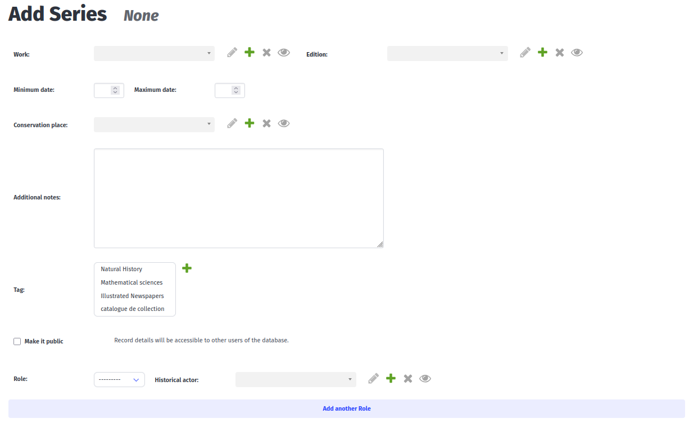
-
Work work common to all witnesses of the series.
Edition edition common to all witnesses of the series.
Minimum date - Maximum date dates of the series.
Conservation place heritage institution preserving the documents.
Additional notes free text for information with no dedicated field (e.g. previous owner, bibliographical information, etc.)
Make it public if you check the box, your witness and its information will be made public to the other users.
Role actors involved in the creation of the work (author, publisher, illustrator…).
Historical actor person entity.
Volumes
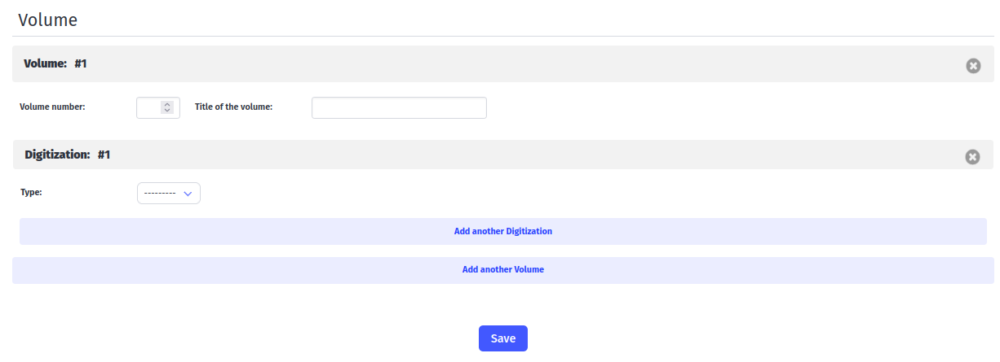
-
Volume number number in the series.
Title of the volume title of the witness in free text.
Digitization
See Digitization.
Work
A work is an abstract intellectual production, encompassing its core ideas and content across various manifestations
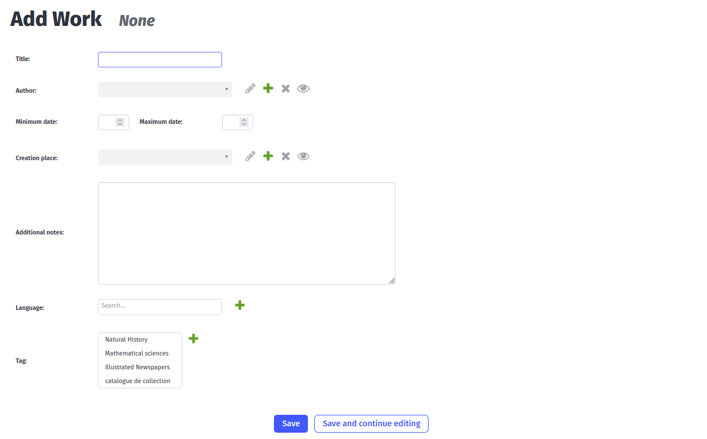
-
Title title of the work in free text.
Author person entity.
Minimum date - maximum date creation dates of the work.
Creation place city or country.
Additional notes free text for information with no dedicated field (e.g. previous owner, bibliographical information, etc.)
Language original language of the work.
Tags admin defined tags.
Sets and treatments
Document sets
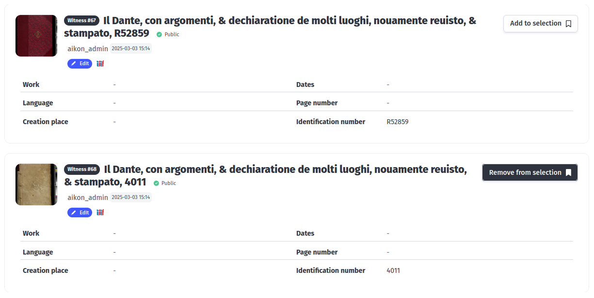
A document set is a personal collection of witnesses, works and series created by a user. Sets can be created by adding objects through the “Add to selection” button.
Selected documents can be viewed by clicking on the “Selection” button.
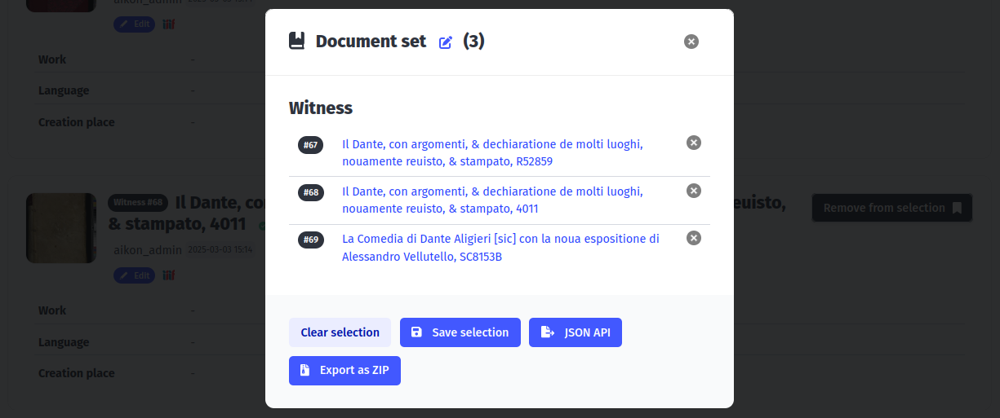
Users can view and edit the selected document in the selection popup, give a title to the selected set and save it. To apply a treatment to the set, click “Save selection” > “Go to treatment”.
Treatments
Sources can be processed by computer vision algorithm through Treatments. Each Treatment instance represents a task applied to a specific set of documents.
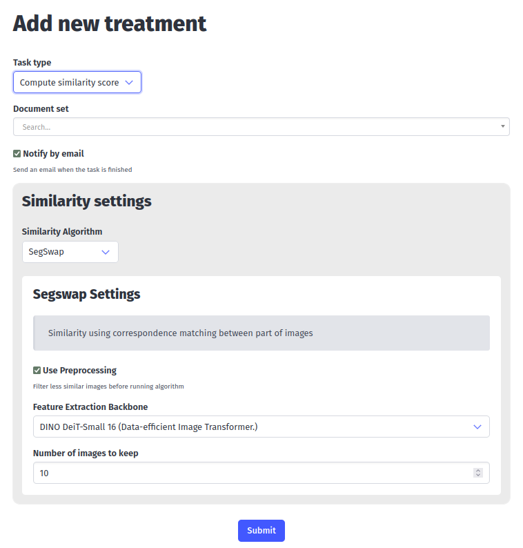
-
Task type extraction, similarity, vectorization, etc.
Document set set of witnesses, series and work to perform task on.
Notify by email receive an email when task is over.
Settings models and parameters.
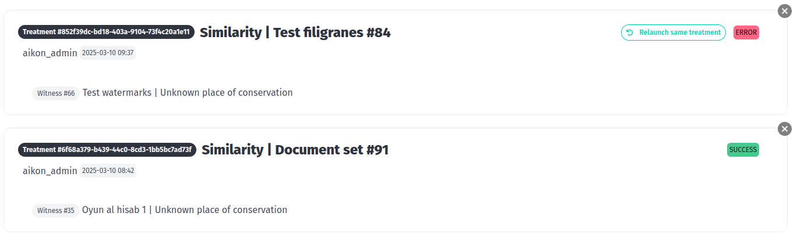
The status and results of the treatments can be viewed in the treatment list interface.
Computer vision results
When selecting a witness, users are directed to a page displaying results from computer vision treatments applied to this witness. These interfaces allow users to edit, correct and download the outputs from the tasks.
Region extraction
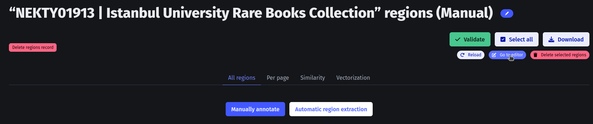
If no automatic extraction was run, users can manually annotate regions through the IIIF viewer by clicking “Manually annotate” > “Go to editor”.
All regions
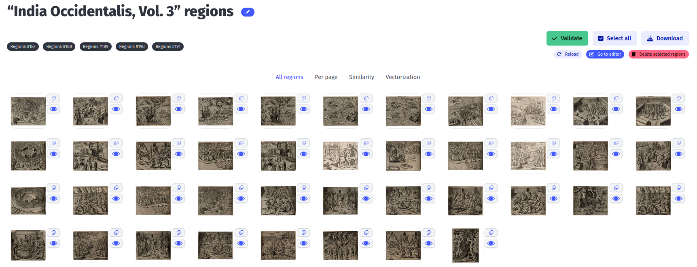
Users can select regions on the interface and delete them by clicking on the “Delete selected regions” button. To add missing regions, users can use the Mirador viewer by clicking “Go to editor” and using the rectangle selection tool.
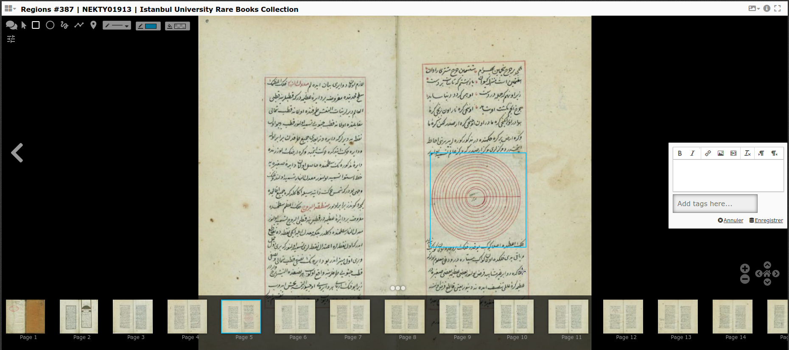
Users can validate their annotations once they are satisfied with the result, and download region images.
Per page
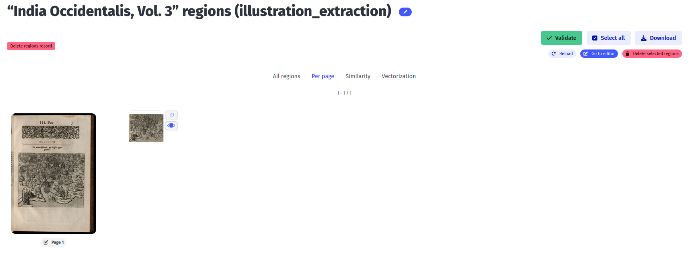
Users can also use the “Per page” view for region annotation with a pagination, with the same functionalities.
Similarity
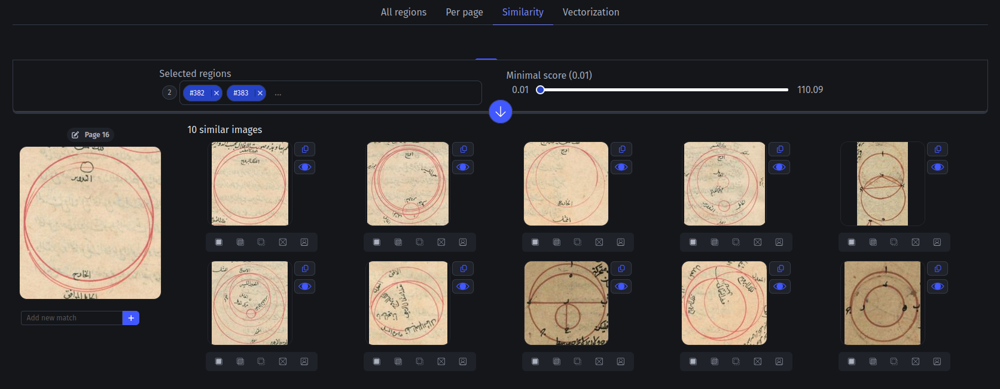
Users can annotate similarity on four different levels:
- Exact match
- Partial match
- Semantic match
- No match
This annotation is used by the propagation algorithm to propose other similarities in the corpus (ex. if A is similar to B and B to C, A and C is a propagated similarity).
Users can add matches they know about by copying the id of the similar region and inputting it in the field below the region image.
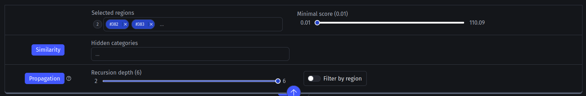
Similarity results can be filtered by score, witness and similarity level in the toolbar.
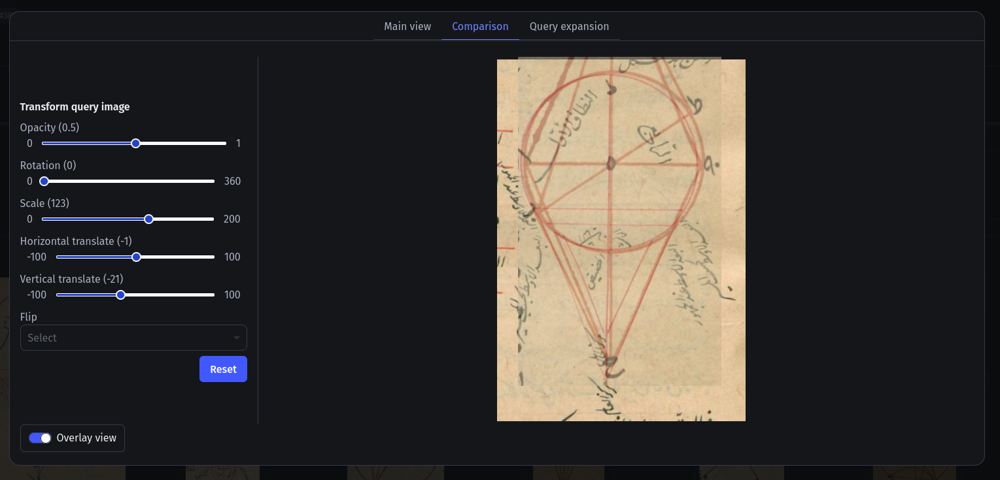
The detailed view (eye button) allows user to overlay similar images to compare them.
Vectorization
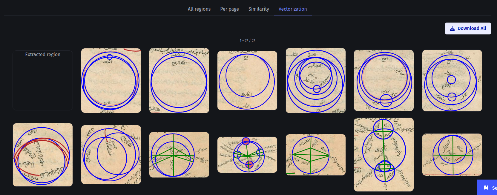
Users can download a ZIP containing all vectorized diagrams by clicking “Download All”.